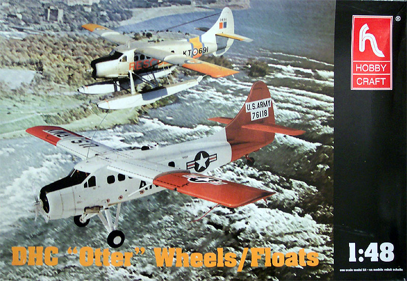
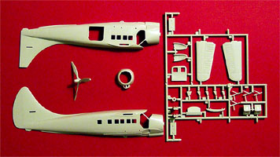
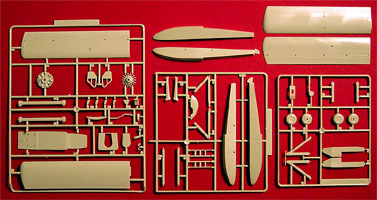
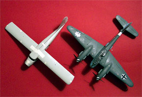
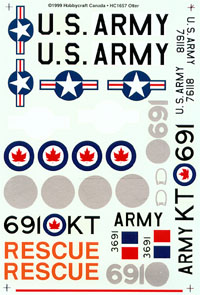

{kind=link}
{kind=link}
{kind=link}
{kind=link}
{kind=link}


Hobbycraft 1/48 Scale DHC-3 Otter

Kit #1657 MSRP $27.95
Images and text Copyright � 2004 by Matt Swan
Developmental History
The Otter began life as the King Beaver based on De Havilland Canada�s previous successful design of the DHC-2 Beaver but soon acquired the designation �Otter�. The Beaver was a rugged and useful STOL utility transport, the Otter was conceived to be capable of performing the same roles but compared to the Beaver is longer, has greater span wings and is much heavier. Seating in the main cabin is for 10 or 11 compared to the 4 to 6 available in the Beaver. As an aerial ambulance it could carry six stretchers and four passengers or three stretchers and seven passengers. Powered by a 600hp Pratt & Whitney R1340 Wasp radial engine the Otter can be fitted with skis, floats or wheels. The amphibious floatplane Otter features a unique four unit retractable undercarriage, with the wheels retracting into the floats.
De Havilland Canada began design work on the DHC-3 Otter in January 1951 and their efforts culminating in the type's first flight on December 12 1951. The Otter was demonstrated to the US Army, and subsequently nearly half of the production of 450 aircraft went to the USAF and USN. Other military users included Australia, Canada and India. . The choice of a single engine for an aircraft designed to operate in Canada's harsh climate and sparsely populated hinterland regions may seem lacking in forethought, however, successful operations by the Beaver and other single-engined airplanes had confirmed that the well-proven radials of Pratt & Whitney design were more than adequate for the task.
Originally the DHC-3 Otter was powered by one 600-hp Pratt & Whitney R-1340-S1H1-G Wasp radial piston engine but later upgrades included a Pratt & Whitney Canada PT6A turboprop, a lower empty weight of 3703 pounds and a higher maximum speed of 267km/h. It was called the Cox Turbo Single Otter. A number of other after market PT6 conversions had also been offered. A later design by De Havilland Canada with twin turboprop engines was also commonly referred to as the Otter was actually the DHC-6 twin Otter. When production ceased in 1968, some 460 airplanes had been built, 223 of these built under the designation U-1A for the U. S. Army.
DHC-3 Otters were universally familiar and, more importantly, were extremely reliable. While examining the Aviation Safety Network I could find only 54 incidences of DHC-3 Otter accidents with twenty-four of those involving loss of life. Most of those were actually the result of pilots flying into mountains so considering that this aircraft has been operational from 1952 right through today, this is a very impressive safety record. The Otter found a significant niche as a bush aircraft and today it remains highly sought after.
The Kit
Hobbycraft takes a lot of slams from the modeling community and I don�t think this is fair. This company produces models of many unusual aircraft that mainstream manufactures just do not care to touch and they do them with a fair degree of quality. Admittedly these are not of Tamiya, Hasegawa or Accurate Miniature standards but they are solid foundations that virtually any competent modeler can build a very nice display piece from.
This is a huge box which is entirely unnecessary. Once you look inside you�ll see that the box has a heavy divider and there are a few trees of parts on each side, for the depth of this box it could easily have been cut in half and still accommodated all these parts with room to spare. The trees of parts are protected by plastic bags and are made from a light gray plastic with a slight tan caste to it. The main parts all display crisply engraved panel lines but the ribbing detail on all the control surfaces is too pronounced and the sprue gates are a little on the heavy side. The access ladders for the float version are also oversized and should be replaced with finer, scratch built ladders. The mold separation lines appear to be about standard for any large-scale production kit. All the large pieces and several of the smaller pieces have a multitude of injector pin marks on the interior surfaces but for the most part these will be concealed during construction.


Click on the pictures above to view larger images
On close examination I find a few items that could use improvement; the crew doors and the cargo door all have injector pin markings on the interiors that will have to be filled, the engine piston bank has virtually no detail on the piston heads at all and the referring to the dash as �basic� is being kind. The pilots wheel seems like it�s kind of oversized and I don�t see any practical way to fix this. This kit includes wheels, basic floats and skis but does not include the float package with retractable landing gear � this may be possible to scratch build without too much difficulty. The skis present a problem in that there is a very large sink mark along the top of each ski. If these parts are going to be used they will probably need at least two coats of putty to fill those holes.

The left hand wing has a nasty warp in it and there is an equally bad warp in the fuselage making it very difficult to get the halves to meet at the midpoint of the fuselage. In the picture to the right (clickable) you can see the separation line right behind the wing. This does build into a very large single engined aircraft. That is a 1/48 Me-410 it is sitting next to in that picture. Once that warpage issue is dealt with the main body parts do seems to fit fairly well, all the panel lines meet up and the wing halves have no overhangs that need to be shaved off. The interior parts may not fit as well, the floor pan looks like it will need a good degree of sanding and test fitting before it has a smooth, secure fit. I did not attempt to test fit the inner bulkheads but am suspicious that they will need as much work as that floor pan does. The clear parts are good. They are all designed to fit into openings and there are no panel lines needed here. For a parts count we have seven clear parts and seventy-six gray parts for a total of eighty-three pieces in the box.
Decals and Instructions

Hobbycraft has provided markings for two different aircraft; the first is a handsome orange on aluminum Canadian rescue aircraft pictured in the instructions with the basic float package and the other is an American Army search and rescue aircraft done in white with insignia red tail and wings. Print registry on the decals looks good and the color density appears to be good also but we are provided with backing decals for many of the markings to ensure that the underlying paint scheme does not show through. While the basic markings are complete there are no service stencils included in the package.
The instruction sheet is a three panel fold-out. There is no historical background information included for the aircraft. There is a very brief color chart on the front panel that lists the three basic colors with paint codes for Floquil, Testors and Humbrol. There are no color codes provided for the interior details. The flip side of the directions give us nine exploded view construction steps with no additional building tips. One panel is devoted to exterior paint schemes and decal placement for the two aircraft mentioned above.
Conclusions
This is not a very exciting kit right out of the box but it does provide a solid foundation to work off of. The basics of the aircraft are here; you will need to dust off the modeling skills to make a good representation of an Otter. I think that I would have to go to the spares box and find something to replace the engine cylinder heads with, the boarding ladders most definitely have to be replaced and the cockpit needs a lot of TLC. I do not believe that much would be required to modify the kit floats to represent the more interesting floats with retractable wheels.
There are a few items available from the aftermarket community; Engines and Things has two different engine packages that can be used in this aircraft (thankfully), Cutting Edge offers a mask set for it and Max Decals has a decals package available that allows for some very interesting schemes � worth checking out. My friend Ollie suggests that if you want a cheap way to get a good engine for your Otter take a Monogram or Occidental T-6 Harvard and steal the engine. Take the geared crankcase from the Hobbycraft kit and fit it to the T-6's engine. Viol�, you have an Otter power plant, only difference is that the Otter has a geared R-1340 where as the Harvard as direct drive.
It�s not a �Shake and Bake� kit and does require modeling skills but will provide you with a very different, and large piece on the modeling shelf or hanging from the ceiling, definitely worth having in the collection.